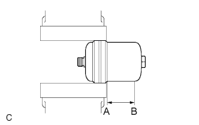

HYDRAULIC BRAKE BOOSTER > DISPOSAL |
| 1. DISPOSE OF BRAKE BOOSTER ACCUMULATOR ASSEMBLY |
|  |
Place the brake booster accumulator assembly in a vise and cover it with cloth.
Using a saw, cut the brake booster accumulator body between A and B as shown in the illustration to discharge the gas inside.
When the outer body of the brake booster accumulator is cut, gas and liquid discharge.